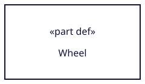
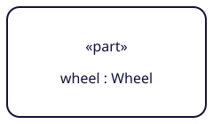
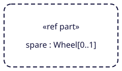
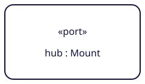
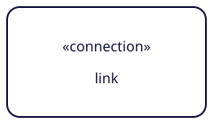
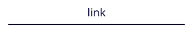
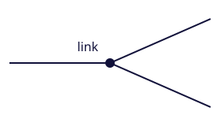
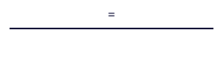

Renderer components
Reusable SVG shapes
Build graphical assets from small, source-backed components. Download a standalone SVG, use the symbol sprite, or set labels and colors with the browser renderer.
- Reusable components
- 9
- Original asset license
- Apache 2.0
- Rendering scope
- Representative
Original redraws for selected parts, ports and connections. Each component records its limits; a glyph does not cover the full notation grammar.
Source evidence
Browse the library
9 shapes shown

Parts / node
Part definition
part-definition
Scope and source
Minimal sharp-corner part definition node with an editable name label.
No compartments, boundary ports, aliases or additional prefixes. The host renderer supplies these when required.
ViewBox: 0 0 240 140
Anchors: north, east, south, west
Full manifest

Parts / node
Composite part usage
part-usage
Scope and source
Minimal solid rounded part usage node with an editable name/type label.
Represents the composite example. Prefix combinations, compartments and port attachments are not included.
ViewBox: 0 0 240 140
Anchors: north, east, south, west
Full manifest

Parts / node
Referential part usage
part-reference
Scope and source
Dashed rounded referential part usage node, retaining its ref part keyword.
This remains a PartUsage. The displayed multiplicity is an example, not a default or a validation result.
ViewBox: 0 0 240 140
Anchors: north, east, south, west
Full manifest

Ports / node
Full port usage
port-usage
Scope and source
Minimal full port usage node with an editable name/type label.
This is the full node form. Nested ports, direction glyphs and reference/proxy alternatives are omitted.
ViewBox: 0 0 240 140
Anchors: north, east, south, west
Full manifest
Ports / glyph
Boundary port glyph
port-glyph
Scope and source
Small rounded undirected boundary port glyph, supplied as a component without a label or host node.
Glyph only. Place it on the appropriate boundary and supply the position-specific port label. It does not include arrows, dotted references, nested ports or proxy dots.
ViewBox: 0 0 24 24
Anchors: center, north, east, south, west
Full manifest

Connections / node
Full connection usage
connection-usage
Scope and source
Minimal full connection usage node.
No compartments or elaboration links. The host renderer determines how the modeled connection is related to its endpoints.
ViewBox: 0 0 240 140
Anchors: north, east, south, west
Full manifest

Connections / edge
Binary connection edge
connection-binary
Scope and source
Solid undirected binary connection line with an editable optional label.
Attach start/end anchors to valid connection ends. Direction indication, roles, multiplicities and adornments are omitted. This line does not imply flow direction.
ViewBox: 0 0 280 72
Anchors: start, end
Full manifest

Connections / edge
Three-ended connection
connection-nary
Scope and source
Representative three-ended usage connection with a filled central dot and solid segments.
A fixed layout with three endpoint anchors. The host renderer must reroute or add segments for other layouts/end counts. Role labels and multiplicities are omitted.
ViewBox: 0 0 280 160
Anchors: junction, end1, end2, end3
Full manifest

Connections / edge
Binding connection
binding-connection
Scope and source
Solid binding line with the required equals sign.
Endpoint usage nodes must have compatible types. The equals sign is fixed; the component does not validate endpoint compatibility.
ViewBox: 0 0 280 72
Anchors: start, end
Full manifest
No shapes match. Try a broader search or another family.
Use these as components
The assets contain geometry and editable text, without a research-page background, branding or source caption. Evidence and licensing stay in SVG metadata and the manifest. The host renderer places labels, routes edges and enforces SysML rules. See the notation coverage dashboard for the wider inventory.